A complete financial reporting suite with 10 essential accounting reports, interactive analysis, drill-down capabilities, and PDF and Excel exports.
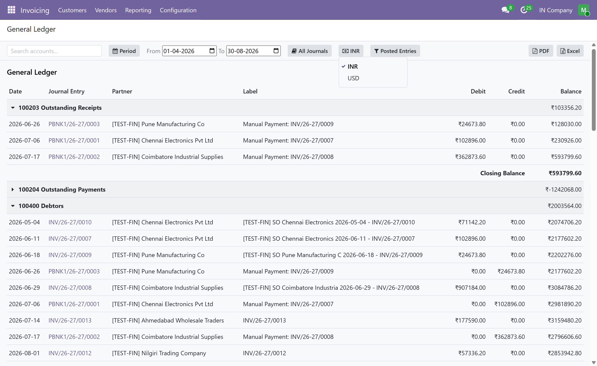
Essential Financial Reports
Professional Export Options
Built for Odoo Community Edition
Analyze your accounting data through a unified reporting interface designed for accountants, finance teams, business owners, and Odoo Community users. Move from financial summaries to detailed transactions without leaving the report.
See exactly where your numbers come from. Review account movements and drill down into the journal entries behind your reported balances.
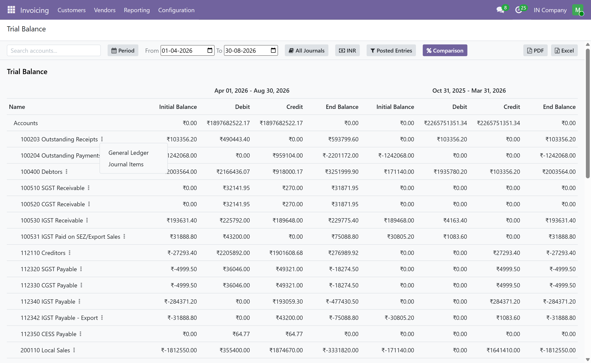
Review debit and credit balances across your accounts and verify the overall balance of your accounting records.
Understand revenue, expenses, and profitability for your selected reporting period.
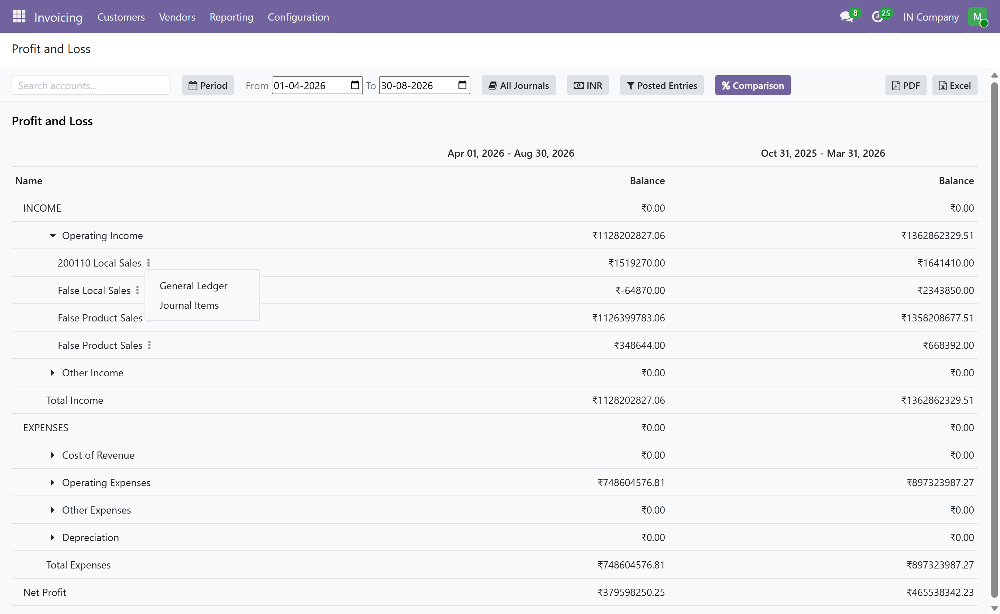
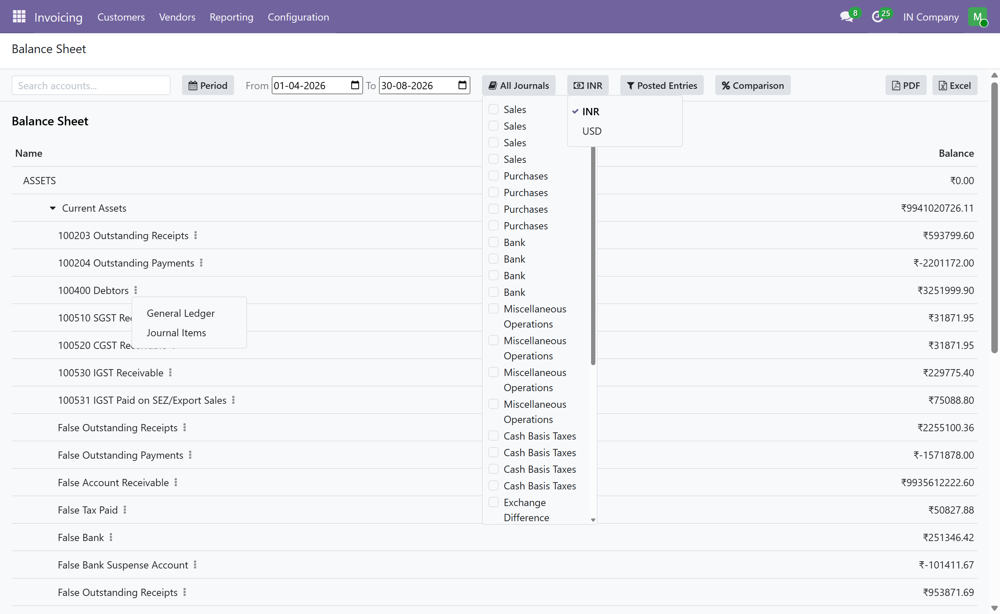
Get a structured view of assets, liabilities, and equity to understand your company's financial position.
Review customer and vendor transactions and investigate the accounting activity behind partner balances.
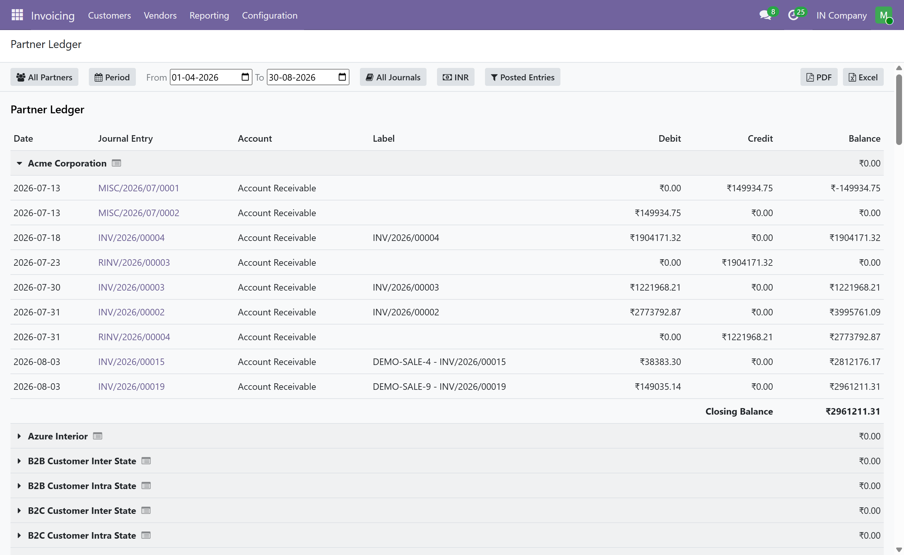
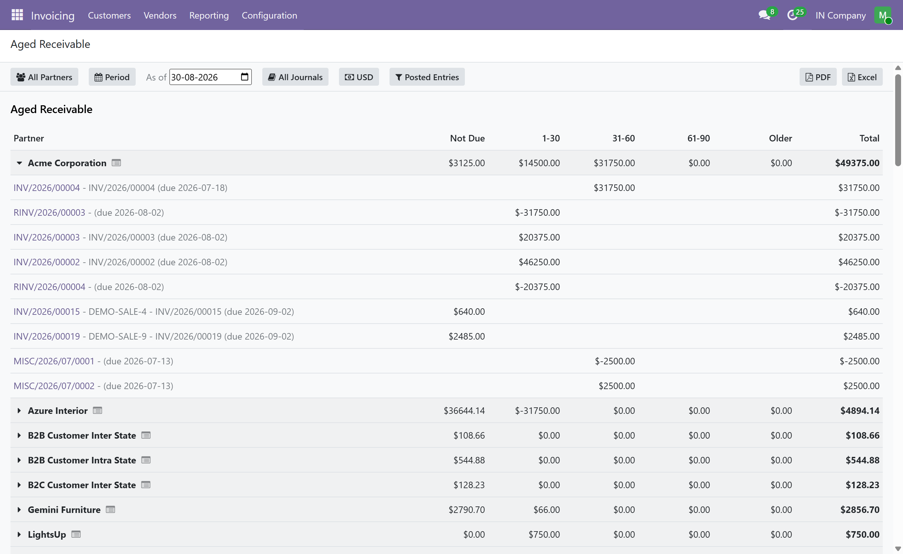
Identify outstanding customer balances and understand receivables according to their aging periods.
Monitor outstanding supplier balances and analyze payable amounts based on their aging periods.
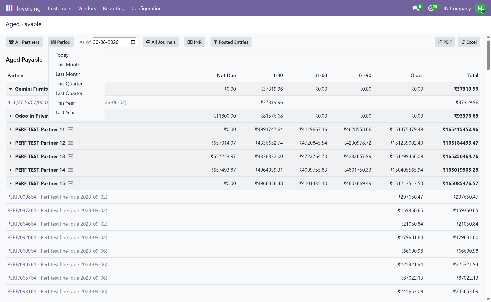
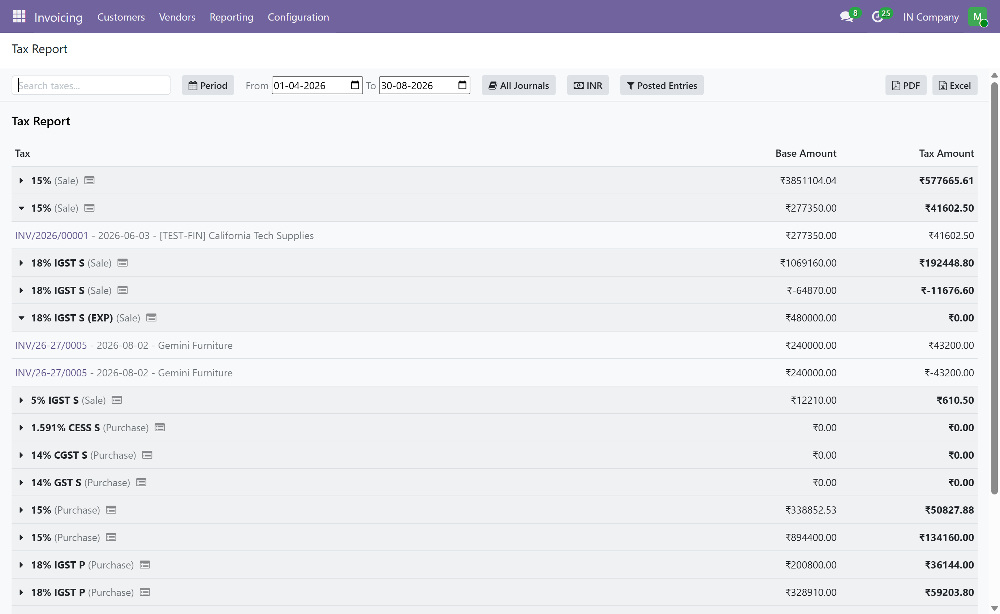
Review tax-related accounting information in a structured financial reporting view.
Analyze accounting activity by journal and investigate transactions across your organization.
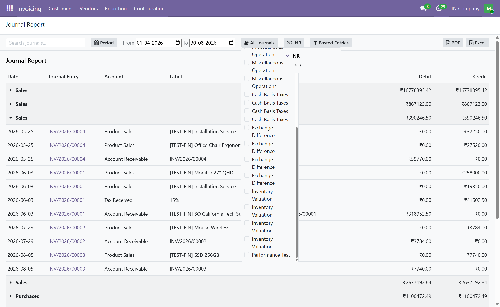
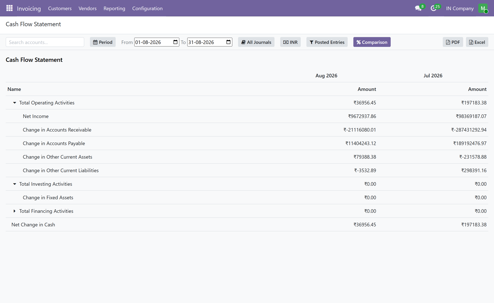
Analyze cash movement and understand how cash flows through your business.
Move from summarized financial information to the underlying accounting entries and investigate the details behind your numbers.
Focus your analysis using reporting dates and available report-specific filters.
Compare reporting periods and identify changes in financial performance over time.
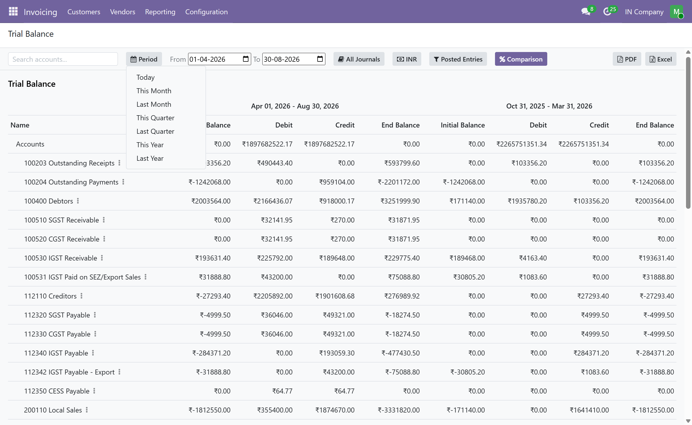
Take your reports beyond Odoo with professional PDF and Excel exports for sharing, reconciliation, analysis, and documentation.
This module is designed specifically for Odoo Community Edition and provides an independent financial reporting implementation on top of Odoo Community's accounting framework.
The module does not depend on, include, or reuse proprietary code
from Odoo Enterprise's account_reports module.
Analyze accounting data and investigate transactions efficiently.
Access essential reports and export financial information when needed.
Get a clearer view of profitability, balances, receivables, payables, and cash flow.
Add a comprehensive financial reporting solution to Community projects.
Analyze, drill down, compare, and export your financial data from one reporting suite.
Free and open source, subject to the applicable license.